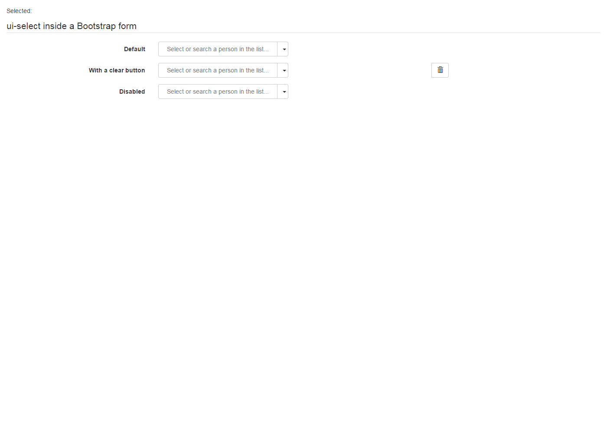

Sample test interacting with AngularJs ui-select, which does not use actual 'select' with 'options'.
| storyboard | ng browser test | |
| open | http://run.plnkr.co/plunks/jBJkDb/ |  |
| click | Select or search a person in the list... | org.openqa.selenium.UnsupportedCommandException: ERROR Job is not in progress Command duration or timeout: 454.66 seconds Build info: version: '2.53.0', revision: '35ae25b1534ae328c771e0856c93e187490ca824', time: '2016-03-15 10:43:46' System info: host: 'testing-worker-linux-docker-89428371-3382-linux-5', ip: '172.17.5.65', os.name: 'Linux', os.arch: 'amd64', os.version: '3.13.0-40-generic', java.version: '1.7.0_76' Session ID: 864bf71b1e52428eabffc4aeec1c017e Driver info: org.openqa.selenium.remote.RemoteWebDriver Capabilities [{platform=XP, acceptSslCerts=true, javascriptEnabled=true, hasMetadata=true, browserName=chrome, chrome={userDataDir=C:\Users\ADMINI~1\AppData\Local\Temp\scoped_dir1880_19415, chromedriverVersion=2.21.371459 (36d3d07f660ff2bc1bf28a75d1cdabed0983e7c4)}, rotatable=false, locationContextEnabled=true, mobileEmulationEnabled=false, webdriver.remote.sessionid=864bf71b1e52428eabffc4aeec1c017e, version=50.0.2661.75, takesHeapSnapshot=true, cssSelectorsEnabled=true, databaseEnabled=false, handlesAlerts=true, browserConnectionEnabled=false, webStorageEnabled=true, nativeEvents=true, hasTouchScreen=false, applicationCacheEnabled=false, takesScreenshot=true}] at sun.reflect.NativeConstructorAccessorImpl.newInstance0(Native Method) at sun.reflect.NativeConstructorAccessorImpl.newInstance(NativeConstructorAccessorImpl.java:57) at sun.reflect.DelegatingConstructorAccessorImpl.newInstance(DelegatingConstructorAccessorImpl.java:45) at java.lang.reflect.Constructor.newInstance(Constructor.java:526) at org.openqa.selenium.remote.ErrorHandler.createThrowable(ErrorHandler.java:206) at org.openqa.selenium.remote.ErrorHandler.throwIfResponseFailed(ErrorHandler.java:158) at org.openqa.selenium.remote.RemoteWebDriver.execute(RemoteWebDriver.java:678) at org.openqa.selenium.remote.RemoteWebDriver.execute(RemoteWebDriver.java:701) at org.openqa.selenium.remote.RemoteWebDriver.getScreenshotAs(RemoteWebDriver.java:335) at nl.hsac.fitnesse.fixture.util.selenium.SeleniumHelper.takeScreenshot(SeleniumHelper.java:1058) at nl.hsac.fitnesse.fixture.slim.web.BrowserTest.createScreenshot(BrowserTest.java:1410) at nl.hsac.fitnesse.fixture.slim.web.BrowserTest.takeScreenshot(BrowserTest.java:1382) at sun.reflect.NativeMethodAccessorImpl.invoke0(Native Method) at sun.reflect.NativeMethodAccessorImpl.invoke(NativeMethodAccessorImpl.java:57) at sun.reflect.DelegatingMethodAccessorImpl.invoke(DelegatingMethodAccessorImpl.java:43) at java.lang.reflect.Method.invoke(Method.java:606) at fitnesse.slim.fixtureInteraction.DefaultInteraction.methodInvoke(DefaultInteraction.java:81) at nl.hsac.fitnesse.fixture.slim.SlimFixture.invoke(SlimFixture.java:45) at nl.hsac.fitnesse.fixture.slim.web.BrowserTest.superInvoke(BrowserTest.java:109) at nl.hsac.fitnesse.fixture.slim.web.BrowserTest.invoke(BrowserTest.java:61) at nl.hsac.fitnesse.fixture.slim.SlimFixture.aroundSlimInvoke(SlimFixture.java:25) at sun.reflect.GeneratedMethodAccessor1.invoke(Unknown Source) at sun.reflect.DelegatingMethodAccessorImpl.invoke(DelegatingMethodAccessorImpl.java:43) at java.lang.reflect.Method.invoke(Method.java:606) at fitnesse.slim.fixtureInteraction.DefaultInteraction.methodInvoke(DefaultInteraction.java:81) at fitnesse.slim.MethodExecutor.callMethod(MethodExecutor.java:55) at fitnesse.slim.MethodExecutor.invokeMethod(MethodExecutor.java:38) at fitnesse.slim.MethodExecutor.findAndInvoke(MethodExecutor.java:72) at fitnesse.slim.FixtureMethodExecutor.execute(FixtureMethodExecutor.java:20) at fitnesse.slim.StatementExecutor.getMethodExecutionResult(StatementExecutor.java:135) at fitnesse.slim.StatementExecutor.call(StatementExecutor.java:108) at fitnesse.slim.StatementTimeoutExecutor$3.call(StatementTimeoutExecutor.java:90) at java.util.concurrent.FutureTask.run(FutureTask.java:262) at java.util.concurrent.ThreadPoolExecutor.runWorker(ThreadPoolExecutor.java:1145) at java.util.concurrent.ThreadPoolExecutor$Worker.run(ThreadPoolExecutor.java:615) at java.lang.Thread.run(Thread.java:745) |
| type org.openqa.selenium.UnsupportedCommandException: ERROR The test with session id 864bf71b1e52428eabffc4aeec1c017e has already finished, and can't receive further commands. You can learn more at https://saucelabs.com/jobs/864bf71b1e52428eabffc4aeec1c017e For help, please check https://docs.saucelabs.com/reference/troubleshooting-common-error-messages Command duration or timeout: 81 milliseconds Build info: version: '2.53.0', revision: '35ae25b1534ae328c771e0856c93e187490ca824', time: '2016-03-15 10:43:46' System info: host: 'testing-worker-linux-docker-89428371-3382-linux-5', ip: '172.17.5.65', os.name: 'Linux', os.arch: 'amd64', os.version: '3.13.0-40-generic', java.version: '1.7.0_76' Session ID: 864bf71b1e52428eabffc4aeec1c017e Driver info: org.openqa.selenium.remote.RemoteWebDriver Capabilities [{platform=XP, acceptSslCerts=true, javascriptEnabled=true, hasMetadata=true, browserName=chrome, chrome={userDataDir=C:\Users\ADMINI~1\AppData\Local\Temp\scoped_dir1880_19415, chromedriverVersion=2.21.371459 (36d3d07f660ff2bc1bf28a75d1cdabed0983e7c4)}, rotatable=false, locationContextEnabled=true, mobileEmulationEnabled=false, webdriver.remote.sessionid=864bf71b1e52428eabffc4aeec1c017e, version=50.0.2661.75, takesHeapSnapshot=true, cssSelectorsEnabled=true, databaseEnabled=false, handlesAlerts=true, browserConnectionEnabled=false, webStorageEnabled=true, nativeEvents=true, hasTouchScreen=false, applicationCacheEnabled=false, takesScreenshot=true}] at sun.reflect.NativeConstructorAccessorImpl.newInstance0(Native Method) at sun.reflect.NativeConstructorAccessorImpl.newInstance(NativeConstructorAccessorImpl.java:57) at sun.reflect.DelegatingConstructorAccessorImpl.newInstance(DelegatingConstructorAccessorImpl.java:45) at java.lang.reflect.Constructor.newInstance(Constructor.java:526) at org.openqa.selenium.remote.ErrorHandler.createThrowable(ErrorHandler.java:206) at org.openqa.selenium.remote.ErrorHandler.throwIfResponseFailed(ErrorHandler.java:158) at org.openqa.selenium.remote.RemoteWebDriver.execute(RemoteWebDriver.java:678) at org.openqa.selenium.remote.RemoteWebDriver.executeAsyncScript(RemoteWebDriver.java:598) at nl.hsac.fitnesse.fixture.util.selenium.SeleniumHelper.waitForJavascriptCallback(SeleniumHelper.java:650) at nl.hsac.fitnesse.fixture.slim.web.BrowserTest.waitForJavascriptCallback(BrowserTest.java:1768) at nl.hsac.fitnesse.fixture.slim.web.NgBrowserTest.waitForAngularRequestsToFinish(NgBrowserTest.java:145) at nl.hsac.fitnesse.fixture.slim.web.NgBrowserTest.waitForAngularRequestsToFinish(NgBrowserTest.java:112) at nl.hsac.fitnesse.fixture.slim.web.NgBrowserTest.waitForAngularIfNeeded(NgBrowserTest.java:82) at nl.hsac.fitnesse.fixture.slim.web.BrowserTest.beforeInvoke(BrowserTest.java:52) at nl.hsac.fitnesse.fixture.slim.SlimFixture.aroundSlimInvoke(SlimFixture.java:24) at sun.reflect.GeneratedMethodAccessor1.invoke(Unknown Source) at sun.reflect.DelegatingMethodAccessorImpl.invoke(DelegatingMethodAccessorImpl.java:43) at java.lang.reflect.Method.invoke(Method.java:606) at fitnesse.slim.fixtureInteraction.DefaultInteraction.methodInvoke(DefaultInteraction.java:81) at fitnesse.slim.MethodExecutor.callMethod(MethodExecutor.java:55) at fitnesse.slim.MethodExecutor.invokeMethod(MethodExecutor.java:38) at fitnesse.slim.MethodExecutor.findAndInvoke(MethodExecutor.java:72) at fitnesse.slim.FixtureMethodExecutor.execute(FixtureMethodExecutor.java:20) at fitnesse.slim.StatementExecutor.getMethodExecutionResult(StatementExecutor.java:135) at fitnesse.slim.StatementExecutor.call(StatementExecutor.java:108) at fitnesse.slim.StatementTimeoutExecutor$3.call(StatementTimeoutExecutor.java:90) at java.util.concurrent.FutureTask.run(FutureTask.java:262) at java.util.concurrent.ThreadPoolExecutor.runWorker(ThreadPoolExecutor.java:1145) at java.util.concurrent.ThreadPoolExecutor$Worker.run(ThreadPoolExecutor.java:615) at java.lang.Thread.run(Thread.java:745) |
Adam | org.openqa.selenium.UnsupportedCommandException: ERROR The test with session id 864bf71b1e52428eabffc4aeec1c017e has already finished, and can't receive further commands. You can learn more at https://saucelabs.com/jobs/864bf71b1e52428eabffc4aeec1c017e For help, please check https://docs.saucelabs.com/reference/troubleshooting-common-error-messages Command duration or timeout: 77 milliseconds Build info: version: '2.53.0', revision: '35ae25b1534ae328c771e0856c93e187490ca824', time: '2016-03-15 10:43:46' System info: host: 'testing-worker-linux-docker-89428371-3382-linux-5', ip: '172.17.5.65', os.name: 'Linux', os.arch: 'amd64', os.version: '3.13.0-40-generic', java.version: '1.7.0_76' Session ID: 864bf71b1e52428eabffc4aeec1c017e Driver info: org.openqa.selenium.remote.RemoteWebDriver Capabilities [{platform=XP, acceptSslCerts=true, javascriptEnabled=true, hasMetadata=true, browserName=chrome, chrome={userDataDir=C:\Users\ADMINI~1\AppData\Local\Temp\scoped_dir1880_19415, chromedriverVersion=2.21.371459 (36d3d07f660ff2bc1bf28a75d1cdabed0983e7c4)}, rotatable=false, locationContextEnabled=true, mobileEmulationEnabled=false, webdriver.remote.sessionid=864bf71b1e52428eabffc4aeec1c017e, version=50.0.2661.75, takesHeapSnapshot=true, cssSelectorsEnabled=true, databaseEnabled=false, handlesAlerts=true, browserConnectionEnabled=false, webStorageEnabled=true, nativeEvents=true, hasTouchScreen=false, applicationCacheEnabled=false, takesScreenshot=true}] at sun.reflect.NativeConstructorAccessorImpl.newInstance0(Native Method) at sun.reflect.NativeConstructorAccessorImpl.newInstance(NativeConstructorAccessorImpl.java:57) at sun.reflect.DelegatingConstructorAccessorImpl.newInstance(DelegatingConstructorAccessorImpl.java:45) at java.lang.reflect.Constructor.newInstance(Constructor.java:526) at org.openqa.selenium.remote.ErrorHandler.createThrowable(ErrorHandler.java:206) at org.openqa.selenium.remote.ErrorHandler.throwIfResponseFailed(ErrorHandler.java:158) at org.openqa.selenium.remote.RemoteWebDriver.execute(RemoteWebDriver.java:678) at org.openqa.selenium.remote.RemoteWebDriver.execute(RemoteWebDriver.java:701) at org.openqa.selenium.remote.RemoteWebDriver.getScreenshotAs(RemoteWebDriver.java:335) at nl.hsac.fitnesse.fixture.util.selenium.SeleniumHelper.takeScreenshot(SeleniumHelper.java:1058) at nl.hsac.fitnesse.fixture.slim.web.BrowserTest.createScreenshot(BrowserTest.java:1410) at nl.hsac.fitnesse.fixture.slim.web.BrowserTest.takeScreenshot(BrowserTest.java:1382) at sun.reflect.NativeMethodAccessorImpl.invoke0(Native Method) at sun.reflect.NativeMethodAccessorImpl.invoke(NativeMethodAccessorImpl.java:57) at sun.reflect.DelegatingMethodAccessorImpl.invoke(DelegatingMethodAccessorImpl.java:43) at java.lang.reflect.Method.invoke(Method.java:606) at fitnesse.slim.fixtureInteraction.DefaultInteraction.methodInvoke(DefaultInteraction.java:81) at nl.hsac.fitnesse.fixture.slim.SlimFixture.invoke(SlimFixture.java:45) at nl.hsac.fitnesse.fixture.slim.web.BrowserTest.superInvoke(BrowserTest.java:109) at nl.hsac.fitnesse.fixture.slim.web.BrowserTest.invoke(BrowserTest.java:61) at nl.hsac.fitnesse.fixture.slim.SlimFixture.aroundSlimInvoke(SlimFixture.java:25) at sun.reflect.GeneratedMethodAccessor1.invoke(Unknown Source) at sun.reflect.DelegatingMethodAccessorImpl.invoke(DelegatingMethodAccessorImpl.java:43) at java.lang.reflect.Method.invoke(Method.java:606) at fitnesse.slim.fixtureInteraction.DefaultInteraction.methodInvoke(DefaultInteraction.java:81) at fitnesse.slim.MethodExecutor.callMethod(MethodExecutor.java:55) at fitnesse.slim.MethodExecutor.invokeMethod(MethodExecutor.java:38) at fitnesse.slim.MethodExecutor.findAndInvoke(MethodExecutor.java:72) at fitnesse.slim.FixtureMethodExecutor.execute(FixtureMethodExecutor.java:20) at fitnesse.slim.StatementExecutor.getMethodExecutionResult(StatementExecutor.java:135) at fitnesse.slim.StatementExecutor.call(StatementExecutor.java:108) at fitnesse.slim.StatementTimeoutExecutor$3.call(StatementTimeoutExecutor.java:90) at java.util.concurrent.FutureTask.run(FutureTask.java:262) at java.util.concurrent.ThreadPoolExecutor.runWorker(ThreadPoolExecutor.java:1145) at java.util.concurrent.ThreadPoolExecutor$Worker.run(ThreadPoolExecutor.java:615) at java.lang.Thread.run(Thread.java:745) |
| press enter org.openqa.selenium.UnsupportedCommandException: ERROR The test with session id 864bf71b1e52428eabffc4aeec1c017e has already finished, and can't receive further commands. You can learn more at https://saucelabs.com/jobs/864bf71b1e52428eabffc4aeec1c017e For help, please check https://docs.saucelabs.com/reference/troubleshooting-common-error-messages Command duration or timeout: 79 milliseconds Build info: version: '2.53.0', revision: '35ae25b1534ae328c771e0856c93e187490ca824', time: '2016-03-15 10:43:46' System info: host: 'testing-worker-linux-docker-89428371-3382-linux-5', ip: '172.17.5.65', os.name: 'Linux', os.arch: 'amd64', os.version: '3.13.0-40-generic', java.version: '1.7.0_76' Session ID: 864bf71b1e52428eabffc4aeec1c017e Driver info: org.openqa.selenium.remote.RemoteWebDriver Capabilities [{platform=XP, acceptSslCerts=true, javascriptEnabled=true, hasMetadata=true, browserName=chrome, chrome={userDataDir=C:\Users\ADMINI~1\AppData\Local\Temp\scoped_dir1880_19415, chromedriverVersion=2.21.371459 (36d3d07f660ff2bc1bf28a75d1cdabed0983e7c4)}, rotatable=false, locationContextEnabled=true, mobileEmulationEnabled=false, webdriver.remote.sessionid=864bf71b1e52428eabffc4aeec1c017e, version=50.0.2661.75, takesHeapSnapshot=true, cssSelectorsEnabled=true, databaseEnabled=false, handlesAlerts=true, browserConnectionEnabled=false, webStorageEnabled=true, nativeEvents=true, hasTouchScreen=false, applicationCacheEnabled=false, takesScreenshot=true}] at sun.reflect.NativeConstructorAccessorImpl.newInstance0(Native Method) at sun.reflect.NativeConstructorAccessorImpl.newInstance(NativeConstructorAccessorImpl.java:57) at sun.reflect.DelegatingConstructorAccessorImpl.newInstance(DelegatingConstructorAccessorImpl.java:45) at java.lang.reflect.Constructor.newInstance(Constructor.java:526) at org.openqa.selenium.remote.ErrorHandler.createThrowable(ErrorHandler.java:206) at org.openqa.selenium.remote.ErrorHandler.throwIfResponseFailed(ErrorHandler.java:158) at org.openqa.selenium.remote.RemoteWebDriver.execute(RemoteWebDriver.java:678) at org.openqa.selenium.remote.RemoteWebDriver.executeAsyncScript(RemoteWebDriver.java:598) at nl.hsac.fitnesse.fixture.util.selenium.SeleniumHelper.waitForJavascriptCallback(SeleniumHelper.java:650) at nl.hsac.fitnesse.fixture.slim.web.BrowserTest.waitForJavascriptCallback(BrowserTest.java:1768) at nl.hsac.fitnesse.fixture.slim.web.NgBrowserTest.waitForAngularRequestsToFinish(NgBrowserTest.java:145) at nl.hsac.fitnesse.fixture.slim.web.NgBrowserTest.waitForAngularRequestsToFinish(NgBrowserTest.java:112) at nl.hsac.fitnesse.fixture.slim.web.NgBrowserTest.waitForAngularIfNeeded(NgBrowserTest.java:82) at nl.hsac.fitnesse.fixture.slim.web.BrowserTest.beforeInvoke(BrowserTest.java:52) at nl.hsac.fitnesse.fixture.slim.SlimFixture.aroundSlimInvoke(SlimFixture.java:24) at sun.reflect.GeneratedMethodAccessor1.invoke(Unknown Source) at sun.reflect.DelegatingMethodAccessorImpl.invoke(DelegatingMethodAccessorImpl.java:43) at java.lang.reflect.Method.invoke(Method.java:606) at fitnesse.slim.fixtureInteraction.DefaultInteraction.methodInvoke(DefaultInteraction.java:81) at fitnesse.slim.MethodExecutor.callMethod(MethodExecutor.java:55) at fitnesse.slim.MethodExecutor.invokeMethod(MethodExecutor.java:38) at fitnesse.slim.MethodExecutor.findAndInvoke(MethodExecutor.java:72) at fitnesse.slim.FixtureMethodExecutor.execute(FixtureMethodExecutor.java:20) at fitnesse.slim.StatementExecutor.getMethodExecutionResult(StatementExecutor.java:135) at fitnesse.slim.StatementExecutor.call(StatementExecutor.java:108) at fitnesse.slim.StatementTimeoutExecutor$3.call(StatementTimeoutExecutor.java:90) at java.util.concurrent.FutureTask.run(FutureTask.java:262) at java.util.concurrent.ThreadPoolExecutor.runWorker(ThreadPoolExecutor.java:1145) at java.util.concurrent.ThreadPoolExecutor$Worker.run(ThreadPoolExecutor.java:615) at java.lang.Thread.run(Thread.java:745) |
org.openqa.selenium.UnsupportedCommandException: ERROR The test with session id 864bf71b1e52428eabffc4aeec1c017e has already finished, and can't receive further commands. You can learn more at https://saucelabs.com/jobs/864bf71b1e52428eabffc4aeec1c017e For help, please check https://docs.saucelabs.com/reference/troubleshooting-common-error-messages Command duration or timeout: 85 milliseconds Build info: version: '2.53.0', revision: '35ae25b1534ae328c771e0856c93e187490ca824', time: '2016-03-15 10:43:46' System info: host: 'testing-worker-linux-docker-89428371-3382-linux-5', ip: '172.17.5.65', os.name: 'Linux', os.arch: 'amd64', os.version: '3.13.0-40-generic', java.version: '1.7.0_76' Session ID: 864bf71b1e52428eabffc4aeec1c017e Driver info: org.openqa.selenium.remote.RemoteWebDriver Capabilities [{platform=XP, acceptSslCerts=true, javascriptEnabled=true, hasMetadata=true, browserName=chrome, chrome={userDataDir=C:\Users\ADMINI~1\AppData\Local\Temp\scoped_dir1880_19415, chromedriverVersion=2.21.371459 (36d3d07f660ff2bc1bf28a75d1cdabed0983e7c4)}, rotatable=false, locationContextEnabled=true, mobileEmulationEnabled=false, webdriver.remote.sessionid=864bf71b1e52428eabffc4aeec1c017e, version=50.0.2661.75, takesHeapSnapshot=true, cssSelectorsEnabled=true, databaseEnabled=false, handlesAlerts=true, browserConnectionEnabled=false, webStorageEnabled=true, nativeEvents=true, hasTouchScreen=false, applicationCacheEnabled=false, takesScreenshot=true}] at sun.reflect.NativeConstructorAccessorImpl.newInstance0(Native Method) at sun.reflect.NativeConstructorAccessorImpl.newInstance(NativeConstructorAccessorImpl.java:57) at sun.reflect.DelegatingConstructorAccessorImpl.newInstance(DelegatingConstructorAccessorImpl.java:45) at java.lang.reflect.Constructor.newInstance(Constructor.java:526) at org.openqa.selenium.remote.ErrorHandler.createThrowable(ErrorHandler.java:206) at org.openqa.selenium.remote.ErrorHandler.throwIfResponseFailed(ErrorHandler.java:158) at org.openqa.selenium.remote.RemoteWebDriver.execute(RemoteWebDriver.java:678) at org.openqa.selenium.remote.RemoteWebDriver.execute(RemoteWebDriver.java:701) at org.openqa.selenium.remote.RemoteWebDriver.getScreenshotAs(RemoteWebDriver.java:335) at nl.hsac.fitnesse.fixture.util.selenium.SeleniumHelper.takeScreenshot(SeleniumHelper.java:1058) at nl.hsac.fitnesse.fixture.slim.web.BrowserTest.createScreenshot(BrowserTest.java:1410) at nl.hsac.fitnesse.fixture.slim.web.BrowserTest.takeScreenshot(BrowserTest.java:1382) at sun.reflect.NativeMethodAccessorImpl.invoke0(Native Method) at sun.reflect.NativeMethodAccessorImpl.invoke(NativeMethodAccessorImpl.java:57) at sun.reflect.DelegatingMethodAccessorImpl.invoke(DelegatingMethodAccessorImpl.java:43) at java.lang.reflect.Method.invoke(Method.java:606) at fitnesse.slim.fixtureInteraction.DefaultInteraction.methodInvoke(DefaultInteraction.java:81) at nl.hsac.fitnesse.fixture.slim.SlimFixture.invoke(SlimFixture.java:45) at nl.hsac.fitnesse.fixture.slim.web.BrowserTest.superInvoke(BrowserTest.java:109) at nl.hsac.fitnesse.fixture.slim.web.BrowserTest.invoke(BrowserTest.java:61) at nl.hsac.fitnesse.fixture.slim.SlimFixture.aroundSlimInvoke(SlimFixture.java:25) at sun.reflect.GeneratedMethodAccessor1.invoke(Unknown Source) at sun.reflect.DelegatingMethodAccessorImpl.invoke(DelegatingMethodAccessorImpl.java:43) at java.lang.reflect.Method.invoke(Method.java:606) at fitnesse.slim.fixtureInteraction.DefaultInteraction.methodInvoke(DefaultInteraction.java:81) at fitnesse.slim.MethodExecutor.callMethod(MethodExecutor.java:55) at fitnesse.slim.MethodExecutor.invokeMethod(MethodExecutor.java:38) at fitnesse.slim.MethodExecutor.findAndInvoke(MethodExecutor.java:72) at fitnesse.slim.FixtureMethodExecutor.execute(FixtureMethodExecutor.java:20) at fitnesse.slim.StatementExecutor.getMethodExecutionResult(StatementExecutor.java:135) at fitnesse.slim.StatementExecutor.call(StatementExecutor.java:108) at fitnesse.slim.StatementTimeoutExecutor$3.call(StatementTimeoutExecutor.java:90) at java.util.concurrent.FutureTask.run(FutureTask.java:262) at java.util.concurrent.ThreadPoolExecutor.runWorker(ThreadPoolExecutor.java:1145) at java.util.concurrent.ThreadPoolExecutor$Worker.run(ThreadPoolExecutor.java:615) at java.lang.Thread.run(Thread.java:745) | |
{kind=link}